- Commune — Noyelles-sur-Escaut
- Chantier — Rénovation énergétique, bâtiment scolaire
Rénovation énergétique de l'école maternelle : toutes les menuiseries extérieures ont été remplacées — fenêtres, portes et dix-huit volets roulants.
Sur un bâtiment ancien en brique, les coffres de volets ont été posés à l'extérieur plutôt qu'à l'intérieur. On ne mange pas de hauteur de vitrage et on évite le pont thermique d'un coffre intérieur. Le gain énergétique est réel.
En cours de chantier, on est passés sur des volets solaires : sur ce type de bâtiment, c'est ce qui évite de tirer des câbles et de faire des saignées partout. Et tout se pilote de façon centralisée — plus besoin de faire le tour des classes pour fermer le dortoir.
C'est aussi l'école de mon village, celle où je suis allé enfant. Et le premier appel d'offres que j'ai monté. J'en ai fait bien d'autres depuis.
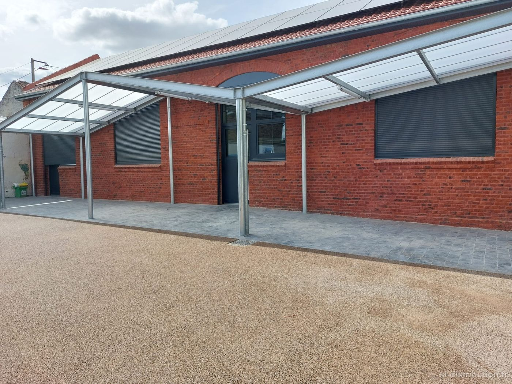
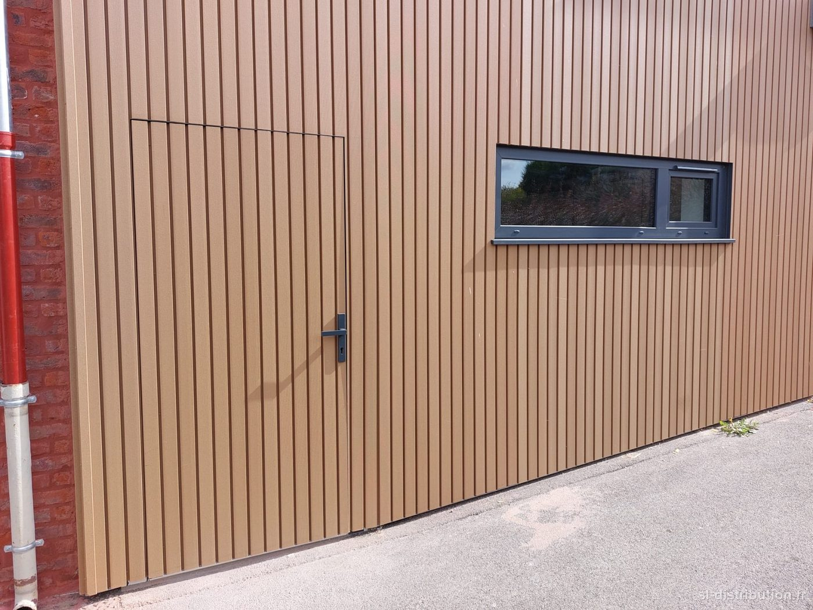
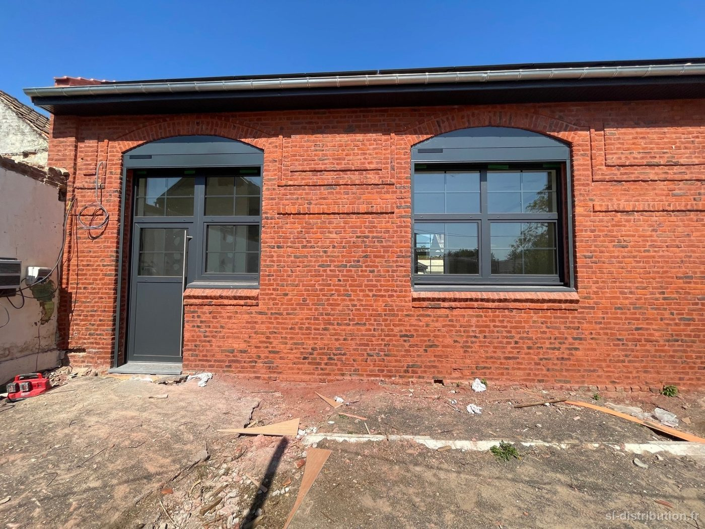
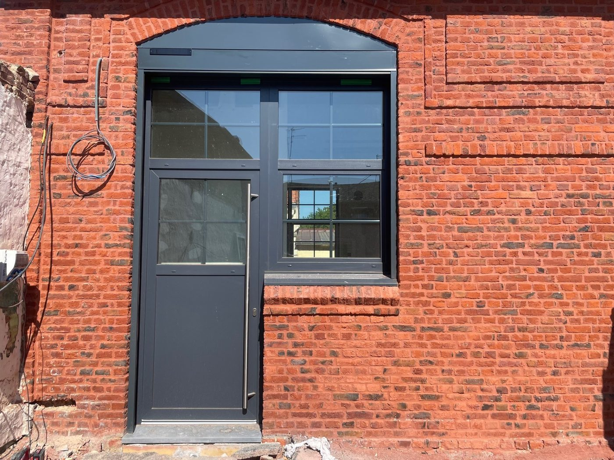

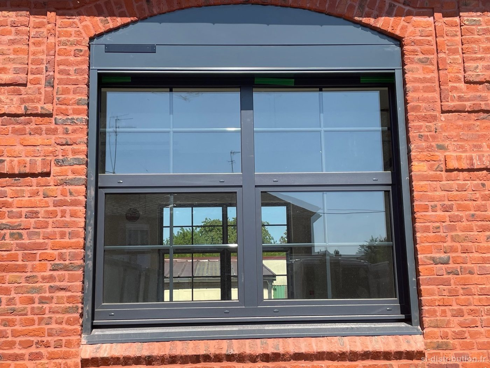
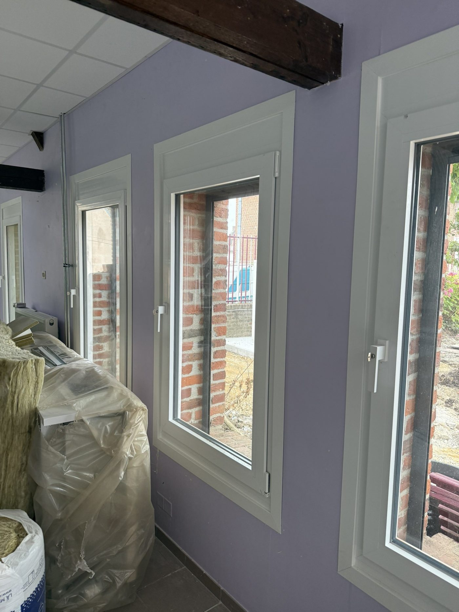

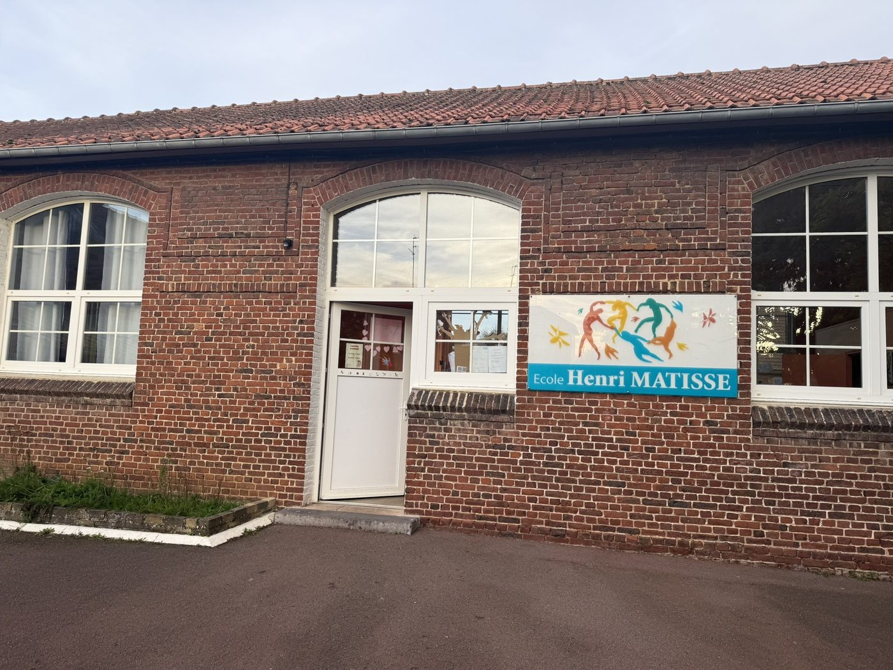
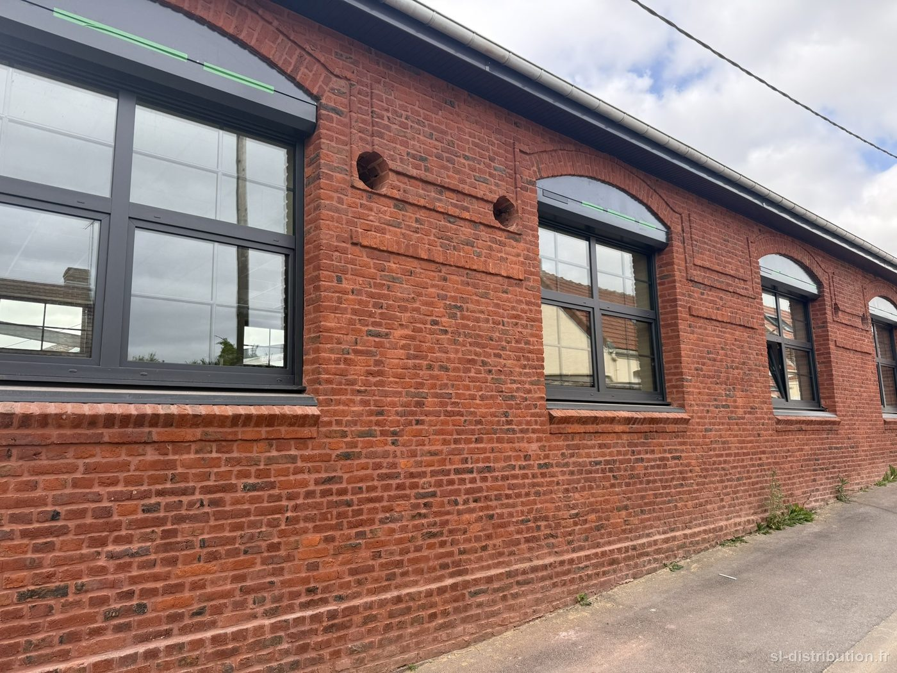
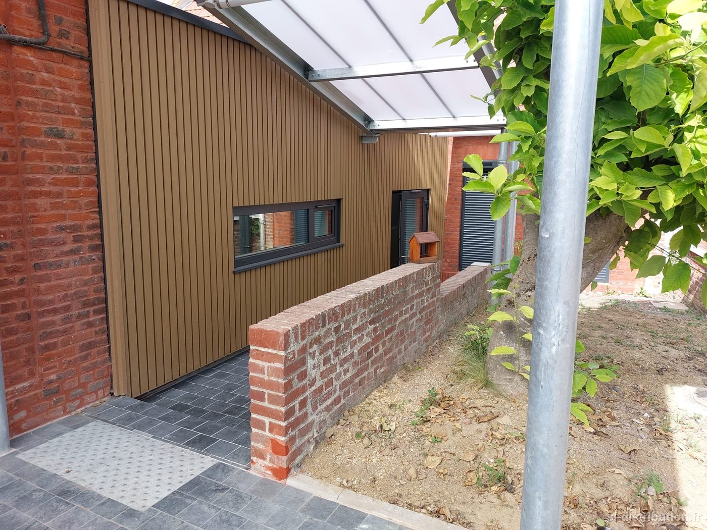
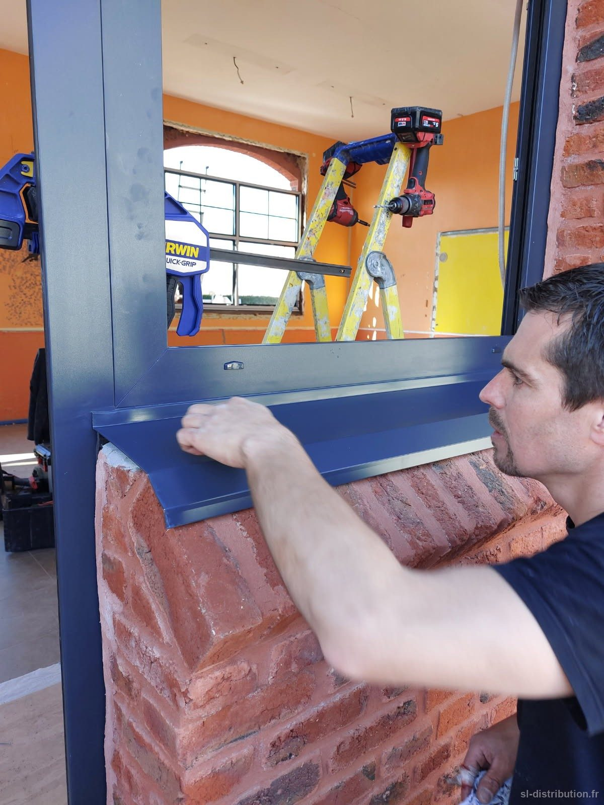
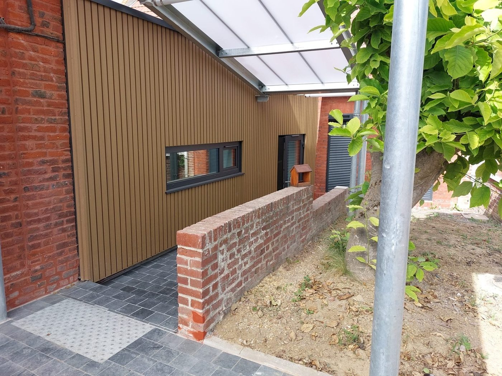

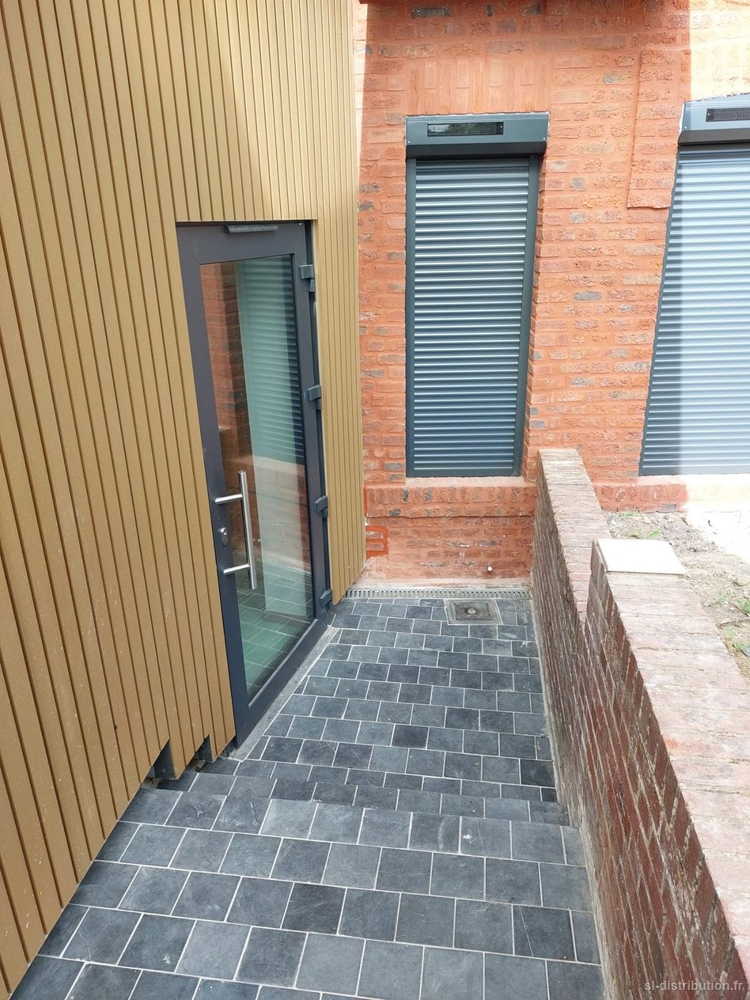